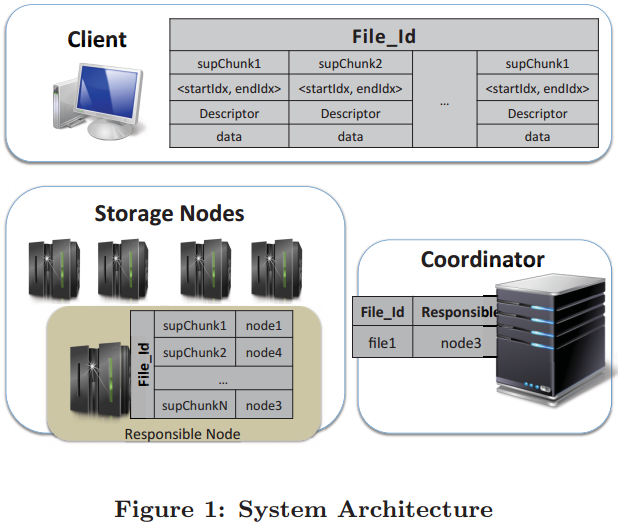

| Venue | Category |
|---|---|
| SoCC'12 | Distributed Deduplication |
Probabilistic Deduplication for Cluster-Based Storage Systems1. SummaryMotivation of this paperProDuckImplementation and Evaluation2. Strength (Contributions of the paper)3. Weakness (Limitations of the paper)4. Some Insights (Future work)
Integrating deduplication into cluster-based backup solution is a challenging task.
Countermeasure
- stateless solutions: assign data to nodes based only on the observation of the content of the chunk of data being stored.
- stateful solutions: maintain information about currently stored data in order to assign identical data blocks to the same node.
Architecture

Chunking
Chunk Assignment
- key observation: to choose the StorageNode offering the highest deduplication rate for a given superchunk, the protocol does not need to know exactly which chunks are stored on each StorageNode.
- it only needs the overlap between the chunks on each StorageNode and those in the superchunk to be stored.
simply applying the bitwise OR operator on the two corresponding bitmap vectors.
- each superchunk.
- multiple superchunks stored in StorageNode.
The coordinator stores a bitmap vector for each StorageNode
64KB for each StorageNode minimal space requirements
Update when receiving a bitmap vector of the incoming superchunk.
update the corresponding the bitmap of the determined storage node.
Also consider the data locality in backup workload:
rank the top StorageNode according to their overlaps, check if the node that stored the previous superchunk in the file is among these .
splitting the storage space of each node into fixed-size buckets.
The coordinator grants the StorageNode a new bucket only if doing so would not exceed the number of buckets allocated of the least loaded node by more than one.
Evaluation
the decision of storing a new superchunk takes into account the location of existing ones.
Metrics
- superchunk size
- bucket size
- maximum allowed bucket difference
quickly identify the servers that can provide the highest deduplication rates for a given data chunks.
spreads the load equally among the nodes.
1) how to determine the storage node for each incoming superchunk to achieve better deduplication ratio? 2) how to achieve the load-balancing under the above objective?
For the first issue, the key is have to design a data structure to track the content of each storage node.
probabilistic counting, set intersection